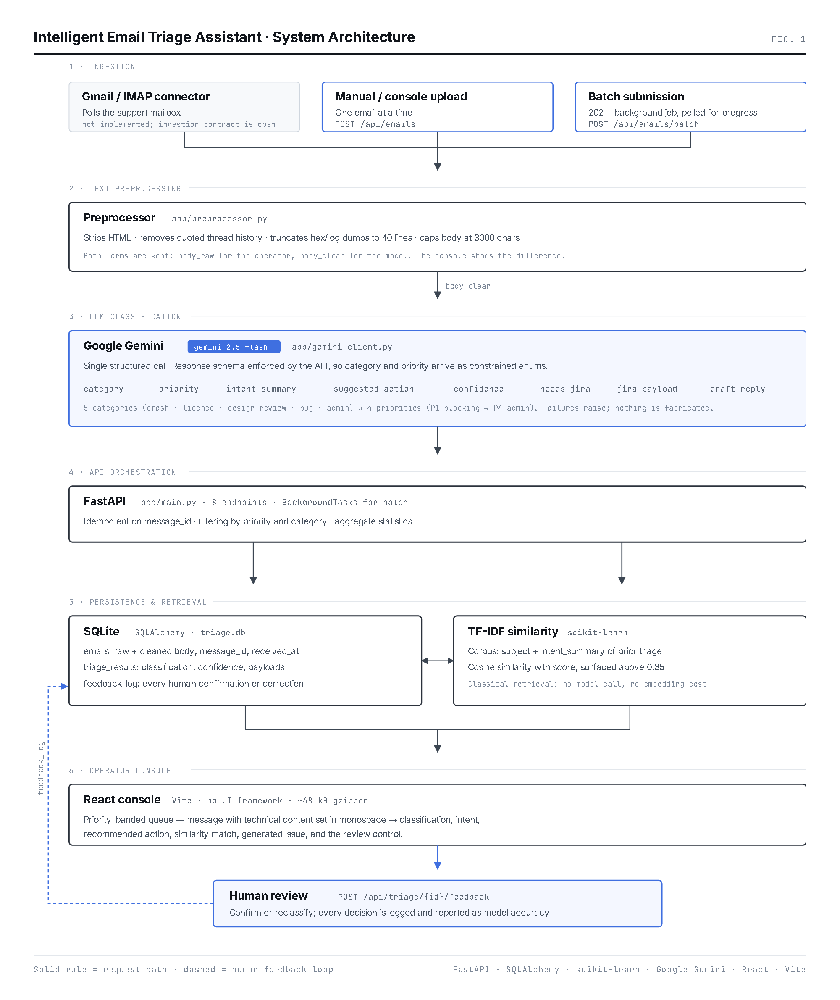
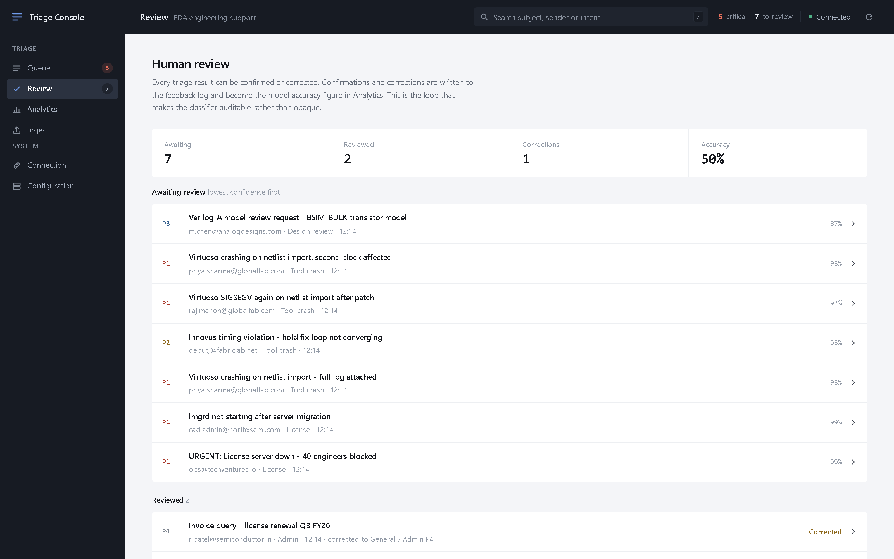
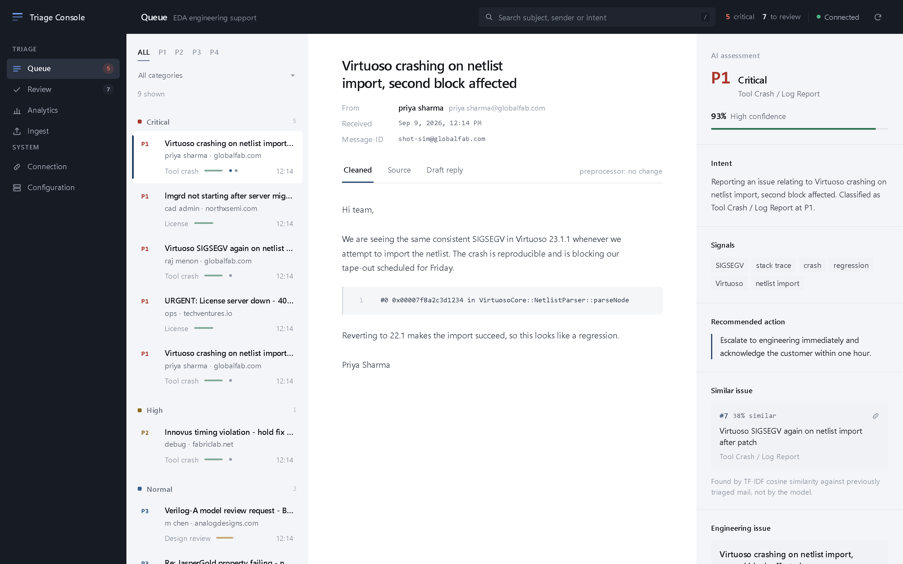
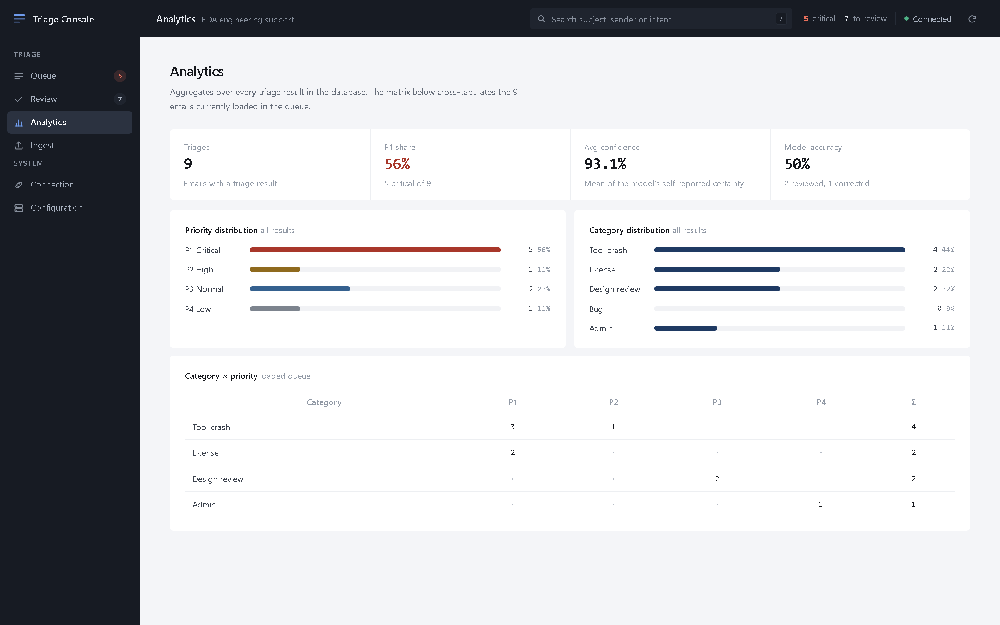
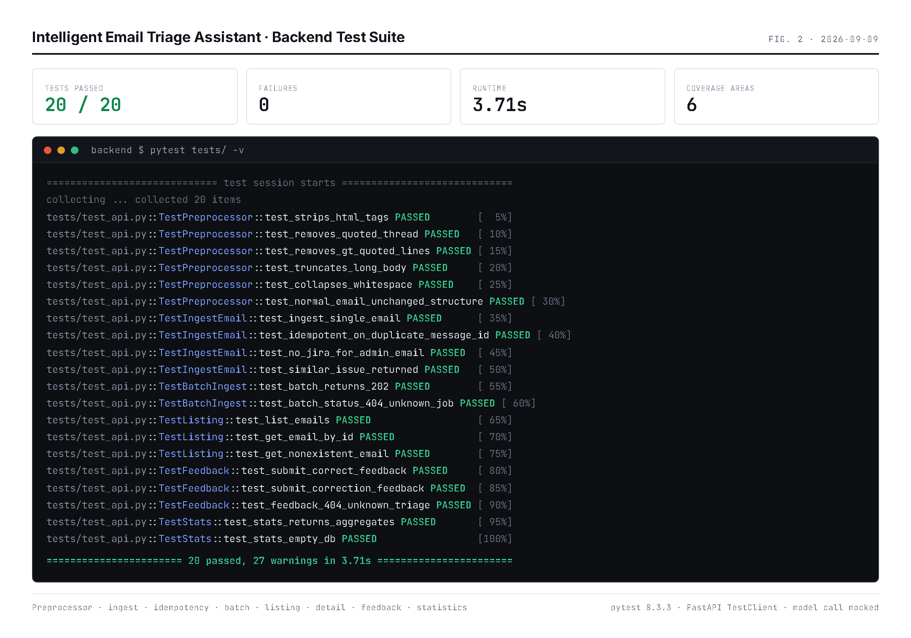

Design document: an AI-assisted triage console for EDA engineering support mail
A shared engineering support inbox receives high volumes of technical mail whose urgency is not correlated with how urgent it sounds. An email titled "quick question" may be a licence outage blocking a delivery milestone; one titled "URGENT" may be an invoice dispute. Triage is therefore a reading task before it is a routing task, and reading every message carefully does not scale with volume.
The cost of getting it wrong is asymmetric. A P1 crash misfiled as a routine question costs a tape-out slip. A P4 admin note escalated to engineering costs an interrupted engineer. The system is therefore designed to make the critical decision fast and visible, and to make every decision reversible by a human.
The operator is an EDA support engineer, CAD engineer, or technical operations lead working a queue. They are technically fluent (a stack trace is information to them, not noise) and they are interrupt-driven. The interface assumes:
| Output | Purpose |
|---|---|
| category | One of five routing destinations: which team owns this |
| priority | P1–P4: when it has to be looked at |
| intent_summary | What the sender is actually asking for, in plain language |
| suggested_action | The operational next step, phrased as a directive |
| confidence | The model's own certainty, used to prioritise human review |
| similar_issue | A previously triaged email covering the same ground, if one exists |
| jira_payload | A structured issue, only where the email is a reproducible defect report |
| draft_reply | An acknowledgement the operator can edit and send |
Six stages, each with one responsibility. The two intelligence stages are deliberately different in kind: classification is a language-model call, similarity is classical information retrieval. Keeping them separate means the expensive, non-deterministic component is used only where judgement is genuinely required.

POST /api/emails receives message_id, sender, subject, body.message_id is checked first. A duplicate returns the stored result without a second model call; ingestion is idempotent, which matters when a mail connector redelivers.preprocess() reduces the body. Both forms are stored: body_raw for the human, body_clean for the model.triage_email() makes one Gemini call under a declared response schema, then validates what comes back.find_similar() scores the new email against the corpus of everything triaged so far.
Batch ingestion follows the same path per email but returns 202 Accepted with a
job id immediately and runs on FastAPI BackgroundTasks. The console polls
GET /api/emails/batch/{job_id} and renders the real completed count; polling
stops the moment the job reports done.
Raw support mail is mostly not signal. An HTML newsletter wrapper, six levels of quoted thread history, and a 4,000-line hex dump all cost tokens and dilute the classification. The preprocessor is a deterministic, testable stage that runs before any model call.
([0-9a-fA-F]{4,}\s+){4,}, and that pattern backtracks catastrophically on a long
unbroken run of hex characters, because the engine retries from every offset. Cost grew with
the square of the line length: 4 KB took 0.11 s, 16 KB took 1.9 s, and a
megabyte stalled indefinitely. A pasted core dump or an inline attachment could therefore hold
a request open, which is a denial-of-service vector in exactly the mail this product handles.
It is now a single left-to-right pass that cannot backtrack. One megabyte is scanned in
0.09 s, and the behaviour is unchanged: the two implementations were compared over 4,000
randomly generated lines plus a set of handcrafted cases with zero disagreements.
| Step | Rationale |
|---|---|
| Strip HTML | Support mail is frequently multipart HTML; tags are pure token cost. |
| Remove quoted thread | Drops >-prefixed lines, On … wrote: blocks, and Outlook -----Original Message----- separators, so the model classifies the new message rather than the thread's history. |
| Truncate log dumps | A hex-dump heuristic finds the start of a dump and keeps 40 lines. The first frames of a stack trace carry the diagnosis; the remaining thousands do not. |
| Collapse whitespace | Normalises the blank-line noise left by the previous steps. |
| Cap at 3,000 chars | A hard token-budget ceiling, with a visible truncation marker so nothing is silently lost. |
One Gemini call per email, using a Flash-class model
(gemini-3.6-flash by default, overridable with GEMINI_MODEL). The
workload is short-context classification and structured extraction, which does not warrant a
premium tier. The categories are not generic sentiment buckets; they are the actual routing
destinations of an EDA support organisation, and the priority definitions are written in terms
of engineering consequence rather than adjectives.
# Priority, defined by consequence rather than by tone "P1" : production-blocking, tape-out at risk, all engineers blocked, revenue impact "P2" : significant engineering impact, workaround needed, SLA risk "P3" : technical question, non-urgent review, normal support request "P4" : admin, info request, low urgency
The call sets response_mime_type: application/json and passes a response schema,
so the shape is a constraint on decoding rather than an instruction the model may ignore.
category and priority are declared as enums, which means an
out-of-taxonomy label cannot be returned in the first place; there is no prompt-side plea to
"return valid JSON" and no markdown fence to strip.
Validation still runs on the way out, in app/llm.py: required fields must be
present, confidence must be numeric and is clamped to 0-100, and a
jira_payload that is incomplete or contradicts needs_jira is dropped
rather than rendered half-built. The provider split is deliberately thin, one file for the
shared contract and one for the vendor, so a second provider would only supply its own
generate().
The prompt returns a needs_jira boolean, and the client drops
jira_payload whenever it is false. This is why an invoice query produces no
issue: not because generation failed, but because the model decided the email was not a defect
report. The console shows that as a deliberate n/a in the pipeline
strip rather than as a missing feature.
Every failure mode is a typed TriageError carrying an HTTP status and one
operator-readable sentence: a missing GEMINI_API_KEY, a rejected key, a rate
limit, an unavailable service, a network failure, a blocked or empty candidate, malformed
JSON, and a schema violation. The API returns that sentence; the browser never sees a Python
traceback. Critically, none of these paths invents a classification. An email that could not
be triaged is stored untriaged and can be re-ingested, and a batch records the failure and
keeps going rather than aborting the job.
confidence value is the model's self-report, not a
calibrated probability, and it is presented as such. It is used for one honest purpose:
ordering the human review queue lowest-confidence-first, so the scarce human attention lands
where the model was least sure. The console shows the figure and a one-word band beside the
bar, and deliberately does not draw a numeric threshold scale, because the backend defines no
such thresholds.
Recurrence is the most valuable signal in a support queue. The fourth report of the same Virtuoso regression should not be investigated from scratch. Every incoming email is scored against the corpus of previously triaged mail using TF-IDF vectors and cosine similarity, and a match is surfaced only above a 0.35 threshold. The score travels with the match, so the console can show how strong it is rather than presenting a bare assertion.
corpus = [f"{email.subject} {triage.intent_summary}" for t, e in past] query = f"{subject} {body[:500]}" tfidf = TfidfVectorizer(stop_words="english", max_features=5000).fit_transform(corpus + [query]) scores = cosine_similarity(tfidf[-1], tfidf[:-1]).flatten()
Indexing intent_summary rather than the body means the retrieval runs over the
model's normalised statement of the problem. Two reports of the same crash written in very
different English (one terse, one apologetic and rambling) converge once both have been
summarised. It also keeps the vectors small and the index cheap to rebuild.
SIGSEGV, lmgrd, NetlistParser and 27000 are precisely the rare, high-IDF tokens this method weights most heavily; exact-term matching is a strength here, not a limitation.
The system is explicitly not autonomous. Every triage result carries a review control, and the
operator answers one question: was this correct? A confirmation records
{correct: true}. A correction records the replacement category and priority
alongside {correct: false}.
feedback_log is an audit trail of who overrode the model and how, which is what makes an automated classifier acceptable in an operations context.GET /api/stats reports agreement rate as feedback_accuracy, so classification quality is a number that is tracked rather than assumed.
| Method | Path | Behaviour |
|---|---|---|
| POST | /api/emails | Ingest and triage synchronously. 201. Idempotent on message_id. |
| POST | /api/emails/batch | Accept a batch, process in the background. 202 with a job id. |
| GET | /api/emails/batch/{id} | Job progress: queued → processing → done. |
| GET | /api/emails | Queue listing, filterable by priority and category. |
| GET | /api/emails/{id} | Full record: both bodies, triage result, review state. |
| POST | /api/triage/{id}/feedback | Record a human decision. 204. |
| GET | /api/stats | Distributions, mean confidence, review counts, accuracy. |
message_id returns the stored triage rather than paying for a second model call.id, the review projection, the bodies and the preview) were added as optional fields. No existing response shape changed and no existing test needed modification.
Each queue row carries the priority as rail geometry (solid, thin, or dashed), type weight, text brightness, and a written code. Colour reinforces but never carries the signal alone, so the ladder survives greyscale printing and colour-blind viewing. The queue is additionally grouped into sticky priority bands, so "what needs attention now" is answered by the structure of the list before any pixel is interpreted.
The analysis panel is ordered as a decision, not as a feature list. It opens with the verdict (priority, category, confidence), then the observable signals, then the intent, then the recommended action. Only after those does it offer context the operator reaches for rather than reads first: the similar issue, the generated engineering issue, and the review control.
The signals row lists terms from a fixed EDA vocabulary that are literally present in the email, such as SIGSEGV, Virtuoso, regression and tape-out. It is evidence the operator can check against the message in the next panel, not an account of how the model reasoned. The model is never asked to explain itself, and no chain of thought is exposed.
The message body is segmented into prose and technical blocks, and technical blocks are set in
monospace with a line gutter. Classification is by shape, not topic: stack frames,
C++ scope resolution, SystemVerilog assertions, log-level prefixes, key/value diagnostic
lines and tool invocations with flags. A sentence that merely mentions SIGSEGV is
still a sentence and stays in prose; an early topic-keyword approach was rejected precisely
because it monospaced ordinary English.
The sidebar and the top bar form one continuous dark L in a deep neutral charcoal. Inside it the workspace is light: the queue and the decision panel on a cool grey, the message itself on white. Application furniture is dark, the work is light, and the brightest surface on screen is the email being read. Measured on the running application, the three workspace columns carry zero border width and zero corner radius, so every edge inside the frame is a value shift rather than a drawn line.
The dark chrome is held to accessible contrast rather than styled by eye. Every text colour on it was measured against WCAG AA and four values were lightened until they cleared 4.5:1; section headings, the top-bar subtitle, counter labels and the search placeholder now sit between 4.8:1 and 5.3:1, and primary chrome text at 14.6:1.
Proportion reinforces it. At 1600 px the queue is 322 px and the decision panel 366 px, leaving the widest column and the widest gutters to the message. The columns are deliberately unequal, and the selected queue row takes the white surface of the message it opens, tying the two together without an outline.
Queue rows carry no borders at all, filters are typographic rather than segmented controls, and the accent is a deep navy reserved for the active navigation item, the selected row and the single primary button on a screen. Priority colour appears only on the priority code itself. There are no gradients, glows or translucency anywhere in the product.
The type is IBM Plex Sans, with IBM Plex Mono reserved for stack traces, payloads, identifiers and figures that must align. The pairing was chosen for its engineering provenance and because it reads as a considered choice rather than a default. Body text sits at 14–15 px with generous leading, since this is an application someone reads in for a whole shift.
The console does not create Jira issues, because the backend has no Jira integration; it renders the generated issue and offers the payload for copying, which is a real action. When the API is unreachable it falls back to a bundled demo dataset, labels itself DEMO DATA in the top bar, and disables ingest with an explanation rather than faking a success.

j/k move selection, / focuses search, 1–5 switch sections.prefers-reduced-motion support throughout.The backend suite covers the preprocessor's individual transformations, ingest, idempotency, conditional Jira generation, similarity pass-through, batch acceptance and job lookup, listing and detail, feedback including the 404 path, and statistics including the empty-database case. The model call is mocked, so the suite is deterministic and runs without an API key.

The frontend was verified against a live server driven through a headless browser:
find_similar() vectorises the entire corpus on every ingest: O(n) per email and O(n²) across a backlog. Fine at hundreds, not at hundreds of thousands._batch_jobs is a process-local dict, so progress is lost on restart and does not survive multiple workers.| Area | Improvement |
|---|---|
| Similarity | Persist the fitted vectoriser and cache the document-term matrix incrementally; make the threshold adaptive to corpus size; return the cosine score to the client so the console can show match strength instead of a binary. |
| Feedback loop | Feed accumulated corrections back as few-shot examples, and report per-category precision so it is clear where the classifier is weak rather than only that it is. |
| Ingestion | Gmail OAuth / IMAP IDLE worker with attachment extraction, feeding the existing batch endpoint. |
| Durability | Move batch state and the queue to Redis or a task table; PostgreSQL for concurrent writers; parallelise model calls with a bounded worker pool. |
| Integration | Real Jira issue creation and reply sending, with the generated payload and draft as the pre-filled starting point rather than the final word. |
| Calibration | Compare self-reported confidence against the human agreement rate to learn whether the model's certainty is meaningful, and re-band the display accordingly. |
| Operations | Authentication and per-team queues; SLA timers on P1 and P2; alerting when a P1 sits unreviewed. |